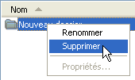

Cette section va vous aider à démarrer avec votre premier projet CD/DVD de donnée personnalisées. InfraRecorder supporte actuellement quatre types de projets.
Les projets CD/DVD de données sont utilisés pour créer contenant des fichiers et des répertoires (en utilisant le système de fichiers ISO9660) qui peut être exploité par presque tout ordinateur. Les disques de données ne peuvent contenir autant de données que les disques audios par secteurs car le système de fichier stocke également des données de contrôle et de corrections d'erreur supplémentaires. De ce fait, les disques de données peuvent être gravés à une vitesse plus élevées sans perte de données ou de qualité. Les disques de données peuvent être gravés en plusieurs fois, autorisant ainsi l'ajout de données sur un CD/DVD déjà gravé. Référez-vous à cette section pour en savoir plus sur ce sujet.
Les projets CD Audio sont utilisés pour créer des disque audios qui peuvent être lu par n'importe quelle platine CD de salon (ou d'ordinateur). Les CD audios doivent normalement être gravé à une vitesse plus lente que les CD de données car ils ne contiennent pas d'informations de contrôle ou de correction d'erreurs.
Les projets CD en mode mixte sont utilisé pour créer des CD qui contiennent des données sur leur première piste avec les mêmes fonctionnalités qu'un CD de données, suivi par des piste audios.Un CD mixte sera lu par n'importe quelle platine de salon, mais la première piste (celle des données) ne sera que du bruit . Les pistes audios seront jouées normalement.
Les projets DVD vidéo sont utilisés pour créer des DVD qui pourront être lu sur une platine DVD de salon. Des restrictions d'ordre matérielles peuvent cependant empêcher la platine de lire un DVD gravé suivant le type de DVD gravé (+R, +RW, -R, -RW). Renseignez vous sur votre platine de salon avant de graver un DVD vidéo.
- Pour créer un nouveau projet, utilisez le menu:
- Fichier
 Nouveau Projet
<sélectionnez le type de projet que vous souhaitez créer>
Nouveau Projet
<sélectionnez le type de projet que vous souhaitez créer> - Pour ouvrir un projet existant, utilisez le menu:
- File Ouvrir un project...
- ou le bouton de la barre d'outils:

Un projet InfraRecorder peut être directement gravé sur un CD/DVD physique, ou être enregisté dans un fichier image disque. Une image disque est un fichier contenant toutes les données ajoutées au projet (sauf les pistes audios dans le cas d'un projet audio ou projet mode mixte). Une image disque peut être gravées sur un CD/DVD plus tard. Voir cette section pour plus d'information.
- Pour graver votre projet sur un CD/DVD, vous pouvez utiliser le menu:
- Actions Graver la compilation
D'un disque compact...
- ou le bouton de la barre d'outils:
Une description détaillée des options disponible apparaît dans cette section.
Environment
General
- La barre d'outil de la Vue Explorateur permet de naviguer dans la vue, et d'ajouter au projet les fichiers ou dossier sélectionnés dans la liste.
- La barre d'outil de la vue Organisation du disque est utilisée pour gérer le projet et naviguer dans le projet.

Gestion des fichiers
- Le menu Edition est utilisé pour la gestion des fichiers du projet.

- Les options disponibles dans le menu d'édition (ci-dessus) peuvent être appelé à partir de la vue de l'explorateur par appel d'un menu contextuel à l'aide d'un clic droit dans la vue. Par exemple, si vous faites un clic droit sur un dossier, ce menu apparaîtra:
- 
- Si vous ajoutez à votre projet plus de données que le média sélectionné ne peut en contenir, l'indicateur d'espace en bas de la vue passera au rouge:

- L'indicateur d'espace passera à l'orange si la somme des données du projet excède la taille officielle du média, mais pourront probablement tenir si l'option Autoriser l'overburning est activée:

Vous pouvez changer la taille de l'indicateur afin de correspondre au disque vierge sur lequel vous allez graver votre projet. Pour cela, faites un clic droit sur l'indicateur, et sélectionnez le type de média approprié.
Gestion de fichiers
Ajout de fichiers
Il y a différents moyens d'ajouter des fichiers à votre projet. Vous pouvez faire un glisser-déposer depuis la vue explorateur ou depuis l'explorateur Windows vers la vue organisation du disque. Vous pouvez également naviguer dans la vue explorateur et sélectionner les fichiers que vous souhaitez ajouter à votre projet.
- Lorsque les fichiers désirés sont sélectionnés, vous pouvez utiliser le menu:
- Edition Ajouter
Sélectionné
- ou le bouton de la barre d'outil de la vue explorateur:

Vous pouvez également naviguer dans la vue explorateur sur un dossier, et rapidement ajouter tous les dossiers et fichiers contenus dans ce dossier à votre projet.
- Pour ajouter tous les fichiers et dossiers dans la vue explorateur active, utilisez le menu:
- Edition Ajouter
Tout
- ou le bouton de la barre d'outil de la vue explorateur:

Supprimer des fichiers
Il y a plusieurs façons de supprimer des fichiers et des dossiers de votre projet. Une façon consiste à sélectionner les fichiers et dossiers dans la vue organisation du disque et appuyer sur le touche "suppr" de votre clavier. Vous pouvez également utiliser le menu ou le bouton de la barre d'outil:
- Pour supprimer les fichiers sélectionnés en utilisant le menu:
- Edition Supprimer
- ou le bouton de la barre d'outil de la vue organisation du disque:

Autres opérations
- Pour renommer un fichier ou un dossier sélectionné, utilisez le menu:
- Edition Renommer
- ou le bouton de la barre d'outil de la vue organisation du disque:

- Pour ajouter un dossier vide à votre projet, utilisez le menu:
- Edition Nouveau Dossier
- ou le bouton de la barre d'outil de la vue organisation du disque: